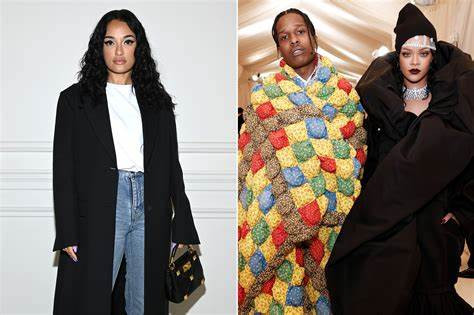

FIRST PRACTICE
Amina Muaddi has finally addressed rumor of rapper A$AP Rocky cheating on Rihanna with her.
Recall there were viral reports of Rihanna and Rocky splitting after she allegedly caught him cheating with the shoe designer during Paris Fashion Week.
But Amina has denied any sort of foul play, calling the infidelity claim "fake gossip." She took to her Instagram stories to put an end to the speculation.
She wrote;
"I've always believed that an unfounded lie spread on social media doesn't deserve any response or clarification, especially one that is so vile.
"I initially assumed that this fake gossip fabricated with such malicious intent would not be taken seriously. However in the last 24h I've been reminded that we live in a society that is so quick to speak on topics regardless of factual basis and that nothing is off limits.
"Not even during what should be one of the most beautiful and celebrated times in one's life.
"Therefore I have to speak up as this is not only directed towards me but it is related to people I have a great amount of respect and affection for. While Rih is continuing to live her serene, best dressed pregnancy life and I go back to my business — I wish everyone a beautiful Easter weekend!"
